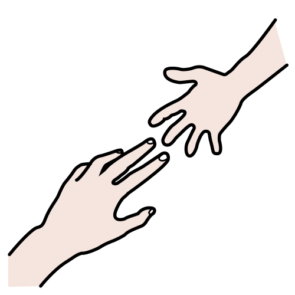
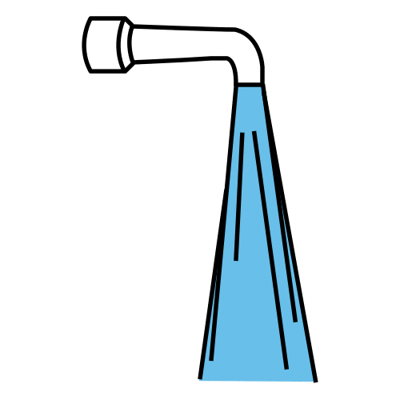
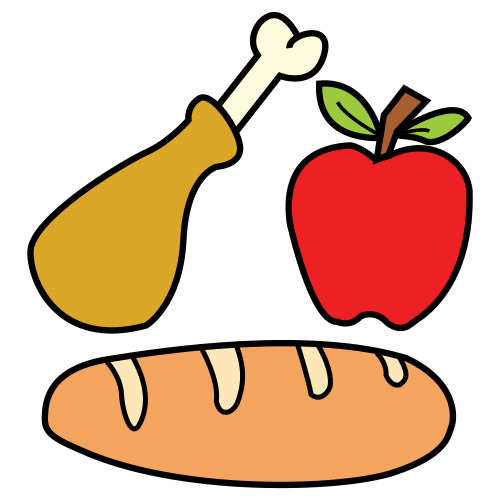
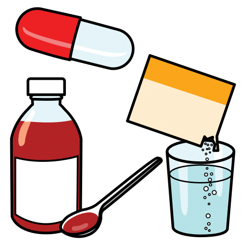
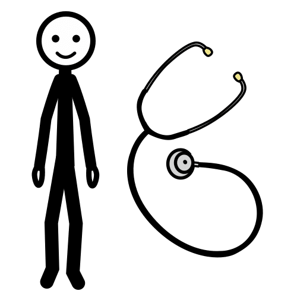
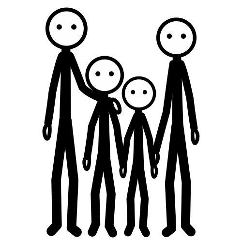
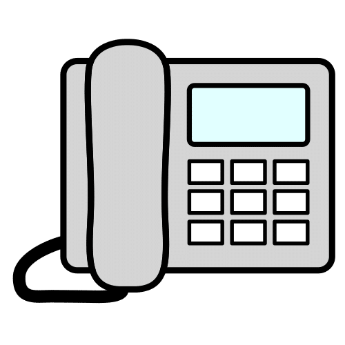
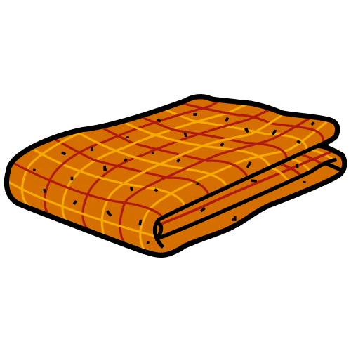
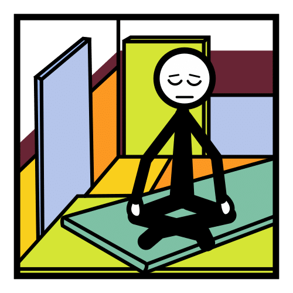
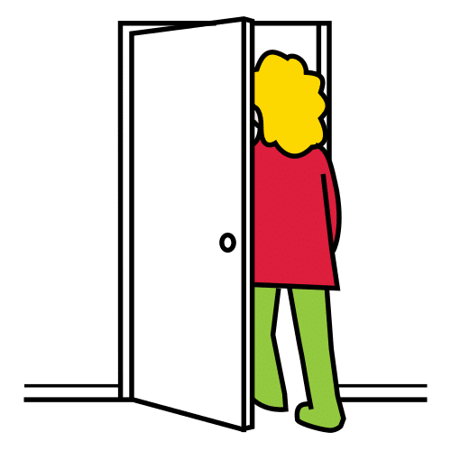

Protezione CivileGruppo Comunale Volontari — Genzano di Roma
Disabilità Adulti · CAACarta CAA dei bisogni
Per adulti con disabilità cognitiva o comunicativa — quando parlare è difficile👉 Indica con il dito il simbolo di ciò di cui hai bisogno. Chi ti assiste capirà. Puoi anche rispondere indicando SÌ o NO.

HO BISOGNO DI AIUTO

SÌ

NO

HO SETE

HO FAME

DEVO PRENDERE LA MEDICINA

VOGLIO UN MEDICO

VOGLIO LA MIA FAMIGLIA

VOGLIO TELEFONARE

HO FREDDO

HO BISOGNO DI CALMA

VOGLIO USCIRE
ℹ️ Per il caregiver o il soccorritore: mostra la carta alla persona e chiedile di indicare il simbolo. Fai una domanda alla volta, con frasi brevi, e lascia il tempo di rispondere. Conferma ciò che ha indicato ripetendolo a voce ("Vuoi l'acqua?") e usa i simboli SÌ / NO per le risposte. La carta è un supporto: non sostituisce l'ascolto né gli eventuali strumenti di comunicazione personali della persona (comunicatore, tabelle proprie).